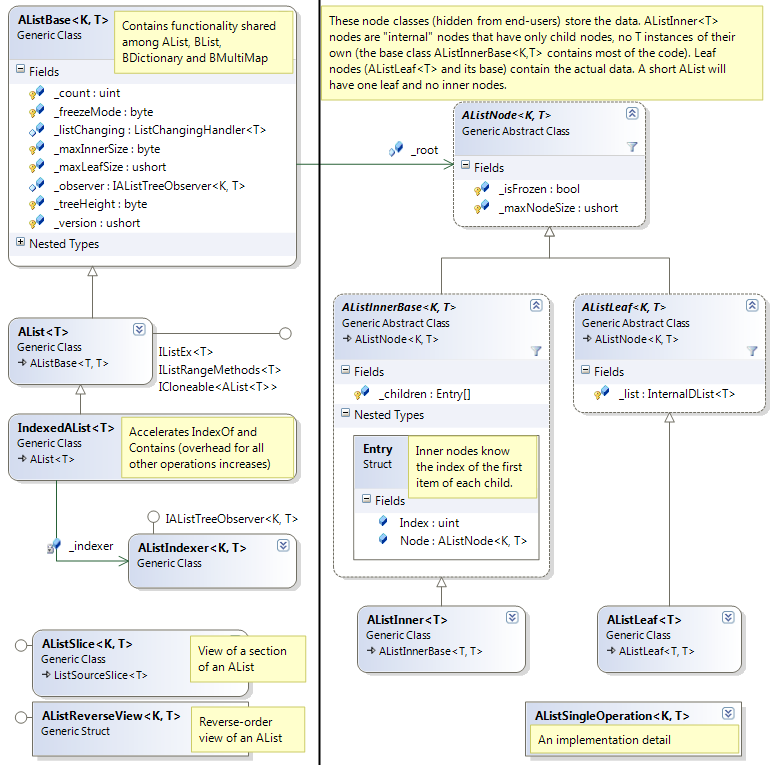
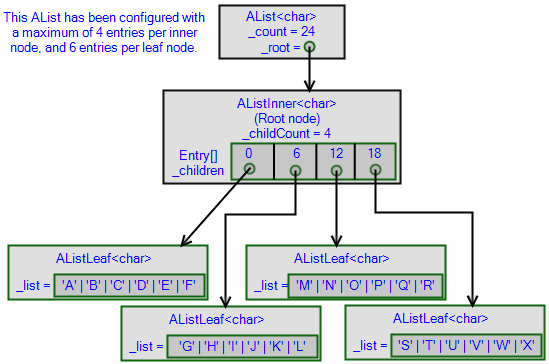
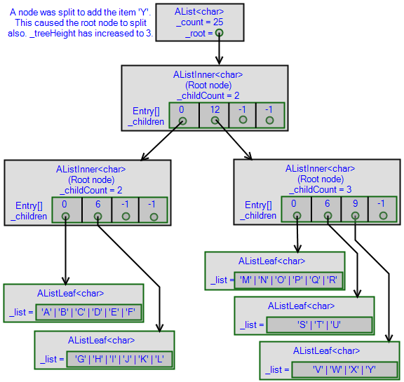

The standard List<T> data type is quite fast, if--if!--all you need to do is read from it and add new items on the end. Inserting and deleting at random locations, however, takes O(N) time, and doing so many times on a large List<T> is very slow. If you literally pick random locations to insert and delete, every insert or delete will move, on average, half of the elements of the list. Of course (and this may sound obvious), making a copy of the whole list also takes O(N) time*.
I used to take these properties for granted, until I read somewhere on StackOverflow that it's possible to implement a list that does O(log N) inserts and deletes instead. My insatiable fetish for data structures kicked in once again, and after 9 months of work (give or take) my new baby, the A-list, popped out.
The A-list does everything that a normal list does, but in O(log N) time instead. For small lists it performs slower than List<T>, but for large lists it can be dramatically faster in certain cases. Besides that, it supports batch insertion (inserting an entire list into an A-List in O(log N + M) for a list of size M), fast cloning (O(1) constant-time), O(log N) Split and Join between two A-lists, freezing the list, and observability.
Although the A-list is pretty complex internally, from the outside it implements the same IList<T> interface as all other lists, plus a bunch of other cool features.
It is designed primarily for large lists. Memory use is not too bad for small lists, but you should expect a speed penalty if you are mostly doing things that List<T> does well, such as random access by index and adding items only at the end. If you need to add/remove items at both the beginning and end, or if you need to insert/remove at random locations but your list is always small, then my DList<T> data structure (described in a future article), will suit you better than AList<T>.
Since writing the AList family of classes I’ve... let it sit unused for more than a year. I had plans to benchmark it, and to reconsider a couple of design decisions, but I’ve been too busy to do it so I’ve decided to release it at 98% completion with unmeasured performance. Y'all can benchmark it yourself.
I like to call A-list "the ultimate notice data structure" because it protects application performance like chubby Fisher-Price toys protect your children. It's not a lean, mean hot rod, but most operations (except Sort(), IndexOf(), Remove(T) and RemoveAll()) can complete in O(log N) or faster, and even IndexOf() and Remove(T) can be accelerated (if you are willing to take a 2x-3x performance hit to all other operations.) It's definitely not a memory hog, either. So if you want to handle long lists and you don't have enough experience to know what data structure to use, just use A-List. It might not be fast, but it's almost guaranteed not to be slow.
For example, have you ever wanted to remove some items and perform some operations on them? You cannot accomplish this with a foreach loop such as this:
int sum = 0;
foreach (int item in list)
if (item > 2) {
sum += item;
list.Remove(item);
// Exception occurs! foreach loop cannot continue after Remove()!
}
You might try to solve this problem with a reverse for-loop such as this:
for (int i = list.Count - 1; i >= 0; i--)
if (list[i] > 2) {
sum += list[i];
list.RemoveAt(i);
}
This works, but it runs in O(N^2) time, so it's very slow if the list is large. A better solution is to separate the analysis and removal into two passes:
int sum = 0;
foreach (int item in list)
if (item > 2)
sum += item;
list.RemoveAll(item => item > 2);
But what if you didn't think of that solution and already wrote the O(N^2) version? There's a lot of code out there already that relies on slow List<T> operations. An easy way to solve performance caused by poor use of List<T> is simply to add "A" in front. AList is pretty much a drop-in replacement for List, so you can convert O(N^2) into faster O(N log N) code simply by using an AList instead of a List.
Structurally, A-Lists are very similar to B+trees. They use memory almost as efficiently as arrays, and each list is a tree of "nodes". Each node is either a "leaf" node (which holds your data, i.e. instances of T) or an "inner" node, also known as an "internal" node. Here's a class diagram of it all:

The key difference between A-Lists and other kinds of trees is that A-Lists are indexable--you can write alist[index]. The way this works is that each inner node contains the first index of each of its children. To locate an item at index i, an inner node performs a binary search to find the child node that contains index i. Whenever an item is inserted or deleted, all the "first indexes" that have changed are updated appropriately.
Like B+trees, A-List trees have a consistent height: if the tree height is 3, for example, then every leaf node is reached through exactly two inner nodes; this is a consequence of the way the tree is updated. Each node has a range of permitted sizes; by default this range is 17 to 48 items for leaf nodes, and 8 to 16 items for inner nodes (I more or less picked these numbers out of a hat, by the way.)
As you add items, a leaf node may grow too large. When a node (leaf or inner) grows too large, an item may be transferred to a sibling, but if the sibling(s) are also too large (or if the node has no siblings because it is the root node), the node is split in half; this causes the parent node to enlarge by 1, which may cause it to also be oversized and split. When the root node splits, a new root node is created to point to the two halves of the data (which increases the tree height by 1).
Here's an example tree structure, produced by the following code:
var list = new AList<char>(maxLeafSize: 6, maxInnerSize: 4) {
'A', 'B', 'C', 'D', 'E', 'F', 'G', 'H', 'I', 'J',
'K', 'L', 'M', 'N', 'O', 'P', 'Q', 'R', 'S', 'T',
'U', 'V', 'W', 'X'
};

Given the configuration of this tree, its capacity is 24 children at depth 2 (4 × 6). If we add a 25th item:
list.Add('Y');
This is the result:

In more detail:
AList.Add('Y') calls AList.Insert(24, 'Y'), which calls the virtual method AListNode.Insert, which calls AListNode.Insert on its fourth child (STUVWX) to insert 'Y' item at local index 6 (from the leaf's point of view).'Y' is added to the right half (VWXY), and the leaf returns the two halves to its parentHandleChildSplit() which enlarges the node and inserts the new child, then notices that it's bigger than the size limit (I found it more convenient to insert the item first, enlarging the internal array, before splitting. The code is doing more work than necessary, but don't worry, inner nodes do not have to split very often. Leaf nodes, meanwhile, split early to avoid the unnecessary enlargement.)AListInner is replaced with two others, which are returned to the AList.AList.Insert() assigns a new AListInner (initialized with two children) to _root.AList supports lots and lots of other operations, which I won't cover in so much detail.
When you remove items, a leaf node may become too small. In this case, an item may be transferred from a sibling to make it bigger, but if the sibling(s) are not allowed to shrink, the node merges with one of its siblings. This causes the parent node to shrink by 1, which may cause the parent to also be too small and merge with its sibling (the child's "uncle"). If the root node is reduced to having only one child, the root node is eliminated and replaced with that single child (which decreases the tree height by 1).
If you're really clever, you understood all of this. If not, the fast cloning feature will probably make your head explode. Anyway, consider reading the Wikipedia entry on B+trees. Essentially the same process occurs in ALists and B+trees. In fact, my library has three versions of the AList<T> that are essentially B+trees plus integer indices (BList<T>, BDictionary<K,V> and BMultiMap<K,V>).
The name "A-List" is short for All-purpose List. It is so named because it has a very large amount of functionality and extension points for further extending this functionality. It's not the fastest or smallest data structure for most tasks, it is very useful when you need to do a variety of different things with a list, or when you plan to merge and split large lists.
A-Lists use slightly more memory than List<T> for all list sizes. If you expect to do insertions and deletions at random locations, but only occasionally, DList<T> (part 3 of this series) may be a better choice because it has a faster indexer. Both classes provide fast enumeration (O(1) per element), but DList<T> enumerators initialize faster (an AList<T> enumerator needs O(log N) time to prepare itself.)
It also has some very unique features, my favorite being fast splicing (Append, Prepend, CopySection, RemoveSection) and fast cloning (Clone(bool)). It can also sort in O(N log N) time, which, I learned, is more difficult than it sounds when your data structure is a frickin' tree.
You can subscribe to the ListChanging event to find out when the list changes (more on that below).
Although single insertions, deletions, and random access require O(log N) time, you can get better performance using any overload of InsertRange, RemoveRange, GetEnumerator or Resize. The slowest of these, InsertRange, requires O(log N + M) time, where M is the number of elements you are inserting, and this is much faster than calling Insert repeatedly (which is O(M log N) time).
AList is an excellent choice if you need to make occasional snapshots of the tree, since it supports O(1) cloning and copy-on-write behavior (more on that below). AList is also freezable, which is useful if you need to construct a list in a read-only or freezable data structure. You could also freeze the list in order to return a read-only copy of it, which, compared to cloning, has the advantage that no memory allocation is required at the time you return the list. If you need to edit the list later, you can clone it then (the clone can be modified).
In general, AList<T> is NOT multithread-safe. Multiple concurrent readers are allowed, as long as the collection is not modified, so frozen instances ARE multithread-safe.
Count, IsReadOnly, Clear, MoveNext/Current (in the enumerator)this[index], Add(item), Insert(index, item), RemoveAt(index), GetEnumerator (the enumerator itself is O(1) per MoveNext)IndexOf(item), Remove(item), Contains(item), CopyTo(array, index) Some of these operations are slowed down by the presence of a "Node observer" such as AListIndexer<T>; however, AListIndexer can speed up IndexOf(item), Remove(item) and Contains(item) from O(N) to O(log N).
AddRange(list): Insert a list of M items in O(log N + list.Count()) time. There is an overload that takes a list of type AList<T>; if you insert a large AList into another one, the insertion is optimized to O(log N + log M) by cloning subtrees. InsertRange(index, list): Insert a list of items at any index in O(log N + list.Count()) time. Similarly, there is an overload of InsertRange for when the list is AList<T>; this overload takes O(log N + log M) time.RemoveRange(index, amount): Remove a contiguous range of items in O(log N) time. Sort(index, count, comp), Sort(), Sort(comp): Sort the entire list or part of the list in O(N log N) time using a standard Comparison<T> delegate or IComparer<T>. I wrote custom code for this purpose, because a naive quicksort would need O(N (log N)^2) time to operate on a tree like this.Different AList<T> objects have the ability to share read-only parts of themselves. Taking advantage of this, the Clone() method returns a copy of the tree in O(1) time.
The clone is allowed to be modified without affecting the original, and the original can be modified without affecting the copy. How this works is that the tree is "secretly" marked read-only (actually just the root is marked read-only, at first, but this transitively affects the whole tree), and if either copy wants to modify the tree, the affected tree nodes are duplicated.
This is really neat, but don't get too excited. Even though it's O(1) at first, any changes that you make after cloning the tree take far more time than they normally would, because parts of the tree have to be duplicated to ensure that the clones do not interfere with each other. If the tree is 4 levels deep, then the first time you change a single element after cloning the tree, 4 nodes will get duplicated: the leaf node that contains your element, and the three parent nodes including the root node.
If you do something like this:
AList<int> clone = list.Clone(); // very fast
for (int i = 0; i < list.Count; i += 17) list[i] += 2; // slow
for (int i = 0; i < clone.Count; i += 17) clone[i] *= 2; // slow
The first for loop will end up duplicating the entire tree, and the second for-loop will duplicate the entire tree again, leaving the original tree nodes as garbage for the garbage collector. In the second loop, the clone cannot modify the original tree because it does not know that the original list is no longer sharing any part of the tree with the clone.
These loops only change every 17th element, but a single leaf node in a large tree contains between 17 and 48 elements (by default). Nodes are always copied all-at-once, so changing every 17th element guarantees that every node will be duplicated (except maybe the last one).
Don't worry too much, though. If you run the two for loops again, they will run much faster because none of the nodes have to be duplicated on the second run.
Note: if the original tree has been frozen with Freeze(), the clone is thawed (unfrozen).
Freeze(): prevents further changes to the list. After calling this method, any attempt to modify the list will cause a ReadOnlyException. If necessary, this feature can be disabled in a derived class.Append(other) and Append(other, true): appends 'other' (another AList<T>) to this list. If the second argument is false or omitted, the tree that is being appended is cloned (marking its nodes read-only). If the second argument is true, the other tree (that is being appended) is cleared to empty, and the contents of the tree are merged into this tree. Remember, if the other tree is cloned then its nodes will be read-only, which will slow down future modifications to the tree. By setting the second argument to true, the nodes are not marked read-only, so they can be modified in the future without being duplicated. Append works in O(log N+log M) time.Prepend(other) and Prepend(other, true): Same as Append except that the contents of 'other' are inserted at the beginning of the list instead of the end. Resize(newSize): Changes the length of the list. If newSize < Count, the list is truncated in O(log N) time. If newSize > Count, new items are added to the end of the list in O(newSize) time; these new items have a value of default(T).TrySet(index, value): same as list[index] = value except that if the index is invalid, TrySet returns false instead of throwing an exception. TryGet(index, defaultValue) is available as an extension method. ReverseView property: returns a wrapper that gives you a read-only reversed access to the list items. This is a handy way to enumerate backwards through the collection with a foreach loop (the reverse enumerator runs in O(1) time per element, just like the forward one.)Slice(start, length): in O(1) time, returns a wrapper object that gives you a view of a subsection of the list.CopySection(start, count): similar to Clone, but only clones a section of the list. Most of the time, start and start+count do not happen to fall on boundaries between tree nodes, so partial nodes will have to be duplicated at the edges of the range. This slows down the operation somewhat, but this function still works in O(log N) time when copying large sections.RemoveSection(start, count): removes a section of the list and returns it. This is different from CopySection because RemoveSection does not have to "clone" any of the nodes that it returns, which would mark them as read-only and slow down future modifications to the section. Like CopySection, RemoveSection normally has to copy some elements around the edges of the range to new nodes, or possibly shuffle the boundaries of nodes near the beginning and end of the range. Still, overall it runs in O(log N) time. First, Last: get the first or last item in O(log N) time.IsFrozen: tells you if this copy of the list is frozen. If you don't like the fact that it's frozen, no big deal, just clone it.IndexesOf(item) and IndexesOf(item, minIndex, maxIndex): returns a sequence of integers that represent the locations where a given item appears in the list. IndexedAList has a IndexesOf(item, bool sorted) method that does the same thing faster when the list is indexed.Swap(AList<T>): swaps two lists in-placeRemoveAll(Predicate<T>): remove all items that meet a condition GetIterator: ask me laterRandom fact: AList<T> is serializable, but it is not specifically designed or optimized for serialization.
AList<T> supports two totally different kinds of observation. One is the conventional "tell me when an item is added or removed" kind of observation, which is available through the ListChanging event. For efficiency, it does not use the same interface as an ObservableCollection; most importantly the event is called while the list is changing, unlike the more standard ListChanged which does not call event handlers until after the list has changed. It turns out that finding out about changes in progress is sometimes less useful than finding out about changes after they are complete, so the design of this feature may be changed someday (I'm not actively redesigning it just yet).
The other kind of observation is a very low-level "tree observer" which is notified about how nodes are being rearranged in the tree and what items are being added or removed in which nodes. Most people will never want to use this feature, and there may be a significant performance penalty when using it. To observe this way you must write a class that implements IAListTreeObserver<T,T>, then call AddObserver(observer) to link the AList to your observer.
The second kind of observer is used by AListIndexer<T> to keep track of the index of every item in an AList<T> in order to speed up IndexOf(item), Contains(item) and Remove(item).
This is a derived class of AList<T> which can accelerates IndexOf(item), Contains(item) and Remove(item) when the list is large. It is a simple wrapper that uses a AListIndexer<T,T> to provide indexing functionality. Unfortunately, IndexedAList<T> changes the behavior of these three functions; instead of finding the first occurrence of an item, these functions will find any occurrence.
An index is created by default, but if necessary the index can be disabled temporarily in the constructor or by settings the IsIndexed property to false. However, an index will be recreated automatically if you call one of those three functions (IndexOf...). Index construction takes O(N log N) time where N is the length (Count).
AListIndexer, in turn, observes changes and builds a table of items in the tree. AListIndexer is only designed to accelerate searches in very large lists, and it offers no performance benefit to small lists; to the contrary, it just wastes time and memory in small lists.
In general, AListIndexer requires more memory than the list that is being indexed. Specifically, if pointers use P bytes, then AListIndexer itself consumes moderately MORE than X+P*N bytes of memory, where X is the size of the list being indexed (in bytes), and N is the number of items in the list. Thus, for example, an indexed list of Objects requires approximately three times as much memory as an AList that is not indexed.
Moreover, changing an indexed list takes at least twice as much time, since the indexer must be notified of each change and updates to the index take O(log N) time per update. Batch operations involving X items that take O(log N) time without an indexer (e.g. RemoveRange(i, X)) will take O(X log N) time instead, because the indexer must be notified about each item changed.
Still, these costs are worthwhile in applications that frequently search for items in the list.
So what have we learned here today? AList<T> (and its base class, AListBase<T>) is a complex tree structure that pretends to be a simple list. Its tree structure enables it to manipulate very long lists efficiently, supporting relatively fast insert, remove, and splicing operations (although indexing individual elements costs extra). Nodes can be frozen (and thawed by automatic copying), which enables AList<T> to support fast cloning and limited use as a "persistent" data structure. It has so many methods, it could have been called KS<T> for Kitchen Sink Tree. AList<T> doesn't have bad performance for short lists, but it is probably not worth using if you know that you'll never need to process a very long list.
It is not clear whether A-List is ready for mission-critical use. It has a lot of internal complexity so I can't guarantee that it is bug-free, although it does have a pretty decent test suite. Currently, the IndexedAList<T> class which accelerates IndexOf() and Remove(T) has not been tested at all, although a basic series of tests have been done on AListIndexer<K,T>, the core mechanism behind IndexedAList<T>.
Soon I will write articles about two related data structures, BList<T> and DList<T>. BList<T> and AList<T> are tree-based and that support insert, remove and the indexer ([i]) in O(log N) time; they share a common base class and some of their implementation. DList<T> is a simple data structure similar to List<T>, except that it can quickly add or remove items at the beginning or end of the list (not just at the end). AList<T>, BList<T> and DList<T> all depend on the same data structure internally, DListInternal<T>, which is a struct that consists of an array and two integers. But that's a story for a future article.
Future articles will also cover some of the other collections in this article's download, including BDictionary<K,V>, BMultiMap<K,V> and InternalList<T>. The articles are not written, but the code is ready, so feel free read the doc-comments above each of these classes.
Note: I updated the zip file. Now AList<T> is provided as part of a library called Loyc.Collections. This library depends on Loyc.Essentials. What "Loyc" means is not important right now, but the point is that the library is currently much bigger than necessary (>600KB for both) because it's got lots of other stuff in it besides AList<T>--extension methods, math code, other collection classes, GoInterface, unit tests, etc. I'm releasing it in this state because I don't know when I'll have time to work on this further.
Here is an overview of Loyc.Essentials stuff and here's an overview of Loyc.Collections.
A demo app is not included, just unit tests. Maybe later.